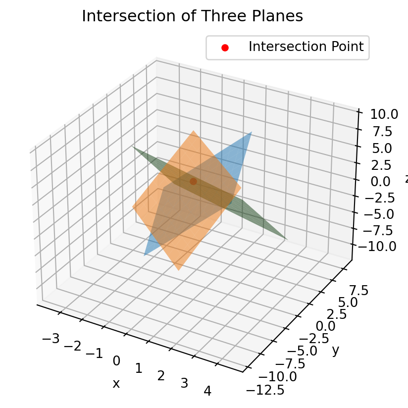

Code
# Coefficient matrix of the system of equations
A = np.array([[3, 2, -1],
[2, -1, 3],
[1, 3, 1]])
# Right-hand side vector of the system of equations
b = np.array([1, -2, 3])
# Solve the system of equations
x = np.linalg.solve(A, b)
# Extract the solutions for x, y, and z
x_val, y_val, z_val = x
# Print the solution
print("Intersection point:")
print("x =", x_val)
print("y =", y_val)
print("z =", z_val)
# Generate points on the planes
x_plane1, y_plane1 = np.meshgrid(np.linspace(-2, 2, 10), np.linspace(-2, 2, 10))
z_plane1 = (1 - 3 * x_plane1 - 2 * y_plane1) / -1
x_plane2, z_plane2 = np.meshgrid(np.linspace(-2, 2, 10), np.linspace(-2, 2, 10))
y_plane2 = (-2 - 2 * x_plane2 + 3 * z_plane2) / 1
y_plane3, z_plane3 = np.meshgrid(np.linspace(-2, 2, 10), np.linspace(-2, 2, 10))
x_plane3 = (1 - 3 * y_plane3 - z_plane3) / 2
# Create 3D plot
fig = plt.figure()
ax = fig.add_subplot(111, projection='3d')
# Plot the planes
ax.plot_surface(x_plane1, y_plane1, z_plane1, alpha=0.5)
ax.plot_surface(x_plane2, y_plane2, z_plane2, alpha=0.5)
ax.plot_surface(x_plane3, y_plane3, z_plane3, alpha=0.5)
# Plot the intersection point
ax.scatter(x_val, y_val, z_val, color='red', label='Intersection Point')
# Set labels and title
ax.set_xlabel('x')
ax.set_ylabel('y')
ax.set_zlabel('z')
ax.set_title('Intersection of Three Planes')
# Show legend
ax.legend()
# Show the plot
plt.show()Intersection point:
x = -0.42857142857142855
y = 1.1428571428571428
z = -8.881784197001253e-17